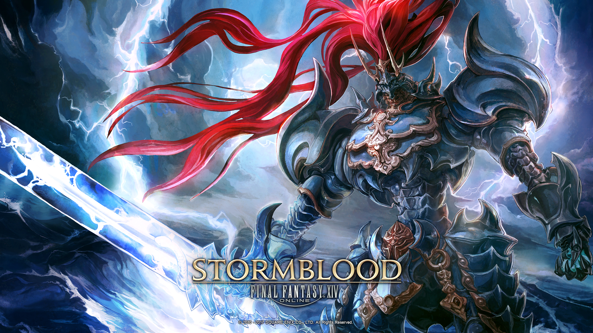

Tempête de sang
L'occupation d'Ala Mhigo
Après la fin du conflit millénaire qui opposait les humains et les dragons dans les terres du nord, c'est un nouveau périple qui commence. Désormais, les Éorzéens tournent leur regard vers le territoire occupé de Gyr Abania afin de libérer Ala Mhigo et son peuple du joug garlemaldais. Au même moment, les signes d'un nouveau soulèvement se font sentir dans la lointaine contrée de Doma, elle aussi province impériale depuis de nombreuses années. Cette aventure va conduire nos héros dans des lieux exotiques et leur permettra de rencontrer de farouches combattants qui luttent contre un ennemi commun : l'empire de Garlemald
Les dirigeants de l'Alliance veulent secourir Ala Mhigo, Raubahn envoie le Guerrier de la Lumière, Lyse et les héritiers pour apporter de l'aide à la Résistance Ala Mhigo. Cependant, Zenos yae Galvus, un prince garlemaldais, attaque le quartier général de la Résistance. Les héritiers décident alors de fomenter une révolution à Doma, une terre occupée par l'empire pour affaiblir ce dernier.
La découverte de Doma
Le groupe met le cap sur l'Extrême-Orient. À Kugane, ils retrouvent Gosetsu, traversent la Mer de Rubis grâce aux marchands Kojin Bleus, et convainquent la Confédération de rompre son contrat avec les mercenaires Kojin Rouges pour chasser l'Empire et vaincre leur primordial, Susano. Ils retrouvent Yugiri à Doma, où le prince Hien cherche à mesurer la volonté de son peuple. S'ils désirent la liberté, il reviendra pour les guider, sinon il se livrera à Garlemald pour soulager la souffrance de son peuple. Lorsque Zenos arrive à Doma pour une inspection, le Guerrier de la Lumière tente de l'assassiner, mais est de nouveau vaincu. Zenos, intrigué, décide de le laisser en vie, cherchant un futur conflit plus intense. Les villageois précédemment sauvés par Yugiri se rallient et repoussent la délégation impériale. Zenos parti, les héritiers se reprennent et parviennent à éloigner les troupes garlemaldaises de Doma et gagne un allié, Hien.
L'affrontement contre le dieu dragon
La Résistance avance dans les Terres de Lochs, Lyse une héritère d'origine mhigoise devient la nouvelle chef de la Résistance. Les héritiers découvrent que les Garlemaldais ont fait des expériences sur des prisonniers, créant des "Résonants" comme Fordola. ils finissent par les repoussés et à acculer Zenos qui survit de justesse et se retranche dans le palais d'ala mhigo. Zenos fusionne avec le primordial Shinryu et devient l'incarnation de Shinryu le dieu dragon. Finalement même sous cette forme il finit par être vaincu et meurt, Doma et Ala Mhigo sont libres. Les héritiers et les dirigeants locaux travaillent à la reconstruction d'Ala Mhigo et de Doma et établissent une république parlementaire pour chacun de ces peuples.
Tsukuyomi

Yotsuyu, était une gouverneuse garlemaldaise qui officiait à Doma, elle était détestée car extrêmement tyranique. L'histoire de Yotsuyu dans l'extension "Stormblood" de Final Fantasy XIV est celle d'un personnage complexe. Elle débute en tant que gouverneur impérial de Doma, une province occupée par l'Empire garléen. Yotsuyu goe Brutus est présentée comme une femme cruelle et sadique, responsable de la souffrance du peuple de Doma. Elle est détestée par de nombreux habitants pour son comportement tyrannique. Cependant, au fur et à mesure que l'histoire progresse, des éléments de son passé sont révélés. On découvre qu'elle a été vendue comme esclave dans sa jeunesse, a subi des abus et a été forcée de travailler dans des conditions inhumaines. Cela a eu un impact profond sur sa psyché, et elle a développé une personnalité sadique et vindicative en réponse à son passé traumatisant.
Plus tard, Yotsuyu est amnésique après avoir survécu à la bataille pour la révélation de Doma évoquée ci-dessus. Lorsqu'elle est confrontée à sa famille abusive, ses souvenirs d'enfance sont ravivés, ce qui la plonge dans un état de confusion et de rage. Elle est finalement manipulée par Asahi sas Brutus, son frère adoptif et membre de l'Empire garlemaldais, pour invoquer le primordial Tsukuyomi, rompant ainsi un traité de paix. Yotsuyu est finalement vaincue par le Guerrier de la Lumière et Alphinaud, mais elle tue également Asahi avant de mourir. Son histoire révèle la complexité de son personnage, mélangeant des éléments de victime et de bourreau, tout en explorant les conséquences du traumatisme sur la psyché d'un individu.
La vérité sur l'empire
La dernière bataille de stormblood a lieu sur les terres d'une Ala Mhigo en reconstruction et concerne l'ensemble de l'alliance éorzéenne contre Garlemad menée par l'empereur en personne, Varis Zos Galvus. Durant la bataille, Varis invite les héritiers et les dirigeants de l'alliance à discuter, il leur révèle la terrible vérité, Garlemald est un subterfuge fondé par les asciens pour semer le chaos et provoqué des fléaux comme Bahamut, dans le but d'invoquer leur dieu Zodiarch. Les propositions de Varis pour instaurer la paix vont contre les idéaux de l'alliance qui refuse. La bataille se poursuit et se solde par une victoire de l'alliance éorzéenne mais l'empire de Garlemald n'a pas dit son dernier mot et n'a pas étanché sa soif de conquête.